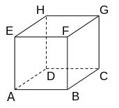

The cube¶
Problem
Consider the cube \(ABCDEFGH\) depicted in the figure.
The vertices \(D\), \(E\), \(F\) and \(H\) of this cube have the following coordinates in a cartesian coordinate system: \(D(0|0|-2)\), \(E(2|0|0)\), \(F(2|2|0)\) and \(H(0|0|0)\).
Add coordinate axes to the figure and label them accordingly. Give the coordinates of point \(A\).
The point \(P\) lies on the edge \([FB]\) of the cube and has a distance of \(3\) from point \(H\). Compute the coordinates of point \(P\).
Solution of part a
The point \(H\) lies in the origin of the coordinate system. Moreover, point \(E\) lies on the positive \(x_1\)-axis and point \(D\) on the negative \(x_3\)-axis. Since the \(x_2\)-coordinate of \(F\) is positive, \(G\) lies on the positive \(x_2\)-axis. The coordinate system can be drawn as shown in the following figure.

The coordinates of \(A\) thus follow as \((2|0|-2)\).
Based on the vectors from \(H\) to \(D\) and \(E\), respectively, one can obtain this result also with the help of Sage.
Solution of part b
Point \(P\) can be determined as the intersection of the edge \([FB]\) and a sphere centered on \(H\) with radius \(3\). The edge is parametrized by the equation
Moreover, the sphere fulfills the equation
By plugging the equation for the edge into the equation for the sphere, we obtain
which can be solved for \(\lambda^2\):
Formally, this equation has the two solutions \(\lambda_1=+\frac{1}{2}\) and \(\lambda_2=-\frac{1}{2}\). Because on the edge, the parameter can only take values between \(0\) and \(1\), only the solution \(\lambda=+\frac{1}{2}\) is admissible. The coordinates of \(P\) are obtained by plugging this value into the equation describing the edge:
The point \(P\) hence has the coordinates \((2|2|-1)\).
Alternatively we can determine the intersection point with Sage: